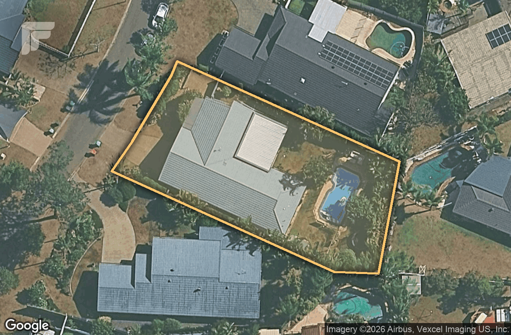

You have read that house prices are falling. The eight most recent sales within 2.0 km of 5 Chantilly Place, once each is adjusted to your home, and Robina's own recorded median point a different way from the national numbers. This piece sets the two side by side; it does not decide between them for you.
The falls are real where they are being measured. Cotality's five-city aggregate fell -0.9% in July 2026 and -2.0% over the July quarter, with Sydney down -3.7%, Melbourne down -3.0% and Brisbane down -0.1% (Cotality, July 2026). The RBA cash rate stands at 4.35%, raised in February, March and May 2026 and held at the 16 June meeting (RBA, 16 June 2026). Headline CPI rose 3.8% over the year to June 2026 and the trimmed mean 3.6% (ABS, June quarter 2026). The Westpac-Melbourne Institute House Price Expectations Index fell -8% in July 2026 to a three-year low, though 47% of respondents still expected rises (Westpac-Melbourne Institute, July 2026). That is a fair picture of a national market under pressure.
Eight houses have sold close to yours between 28 January 2026 and 3 August 2026. The nearest is 26 Ballyliffen Court, 0.18 km away; the furthest in this set is 1.92 km. They are the evidence here, because a sale down the road is a real transaction, not an estimate.
A raw sale price is not directly comparable to your home, though, because no two houses are the same. Take 81 Thorngate Drive, which sold on 11 May 2026 for $1,410,000 — a real sale price. On micro location, we add $82,908; it has 720 sqm of land against your 907, so we add $52,958; it has 223 sqm of internal floor area against your 263, so we add $37,735, with three smaller differences. Those differences restate that sale as $1,585,424 — an estimate of what that same buyer would likely have paid for a home like yours. Every sale below has been through the same process.
| Address | Distance | Sold | Sale price | Adjusted for your home |
|---|---|---|---|---|
| 26 Ballyliffen Court | 0.18 km | 9 June 2026 | $1,475,000 | $1,580,729 |
| 81 Thorngate Drive | 0.81 km | 11 May 2026 | $1,410,000 | $1,585,424 |
| 13 Waitara Place | 0.57 km | 3 August 2026 | $1,610,000 | $1,589,455 |
| 14 Waitara Place | 0.57 km | 28 January 2026 | $1,560,000 | $1,668,461 |
| 26 Moorabbin Place | 1.20 km | 6 July 2026 | $1,620,000 | $1,689,494 |
| 72 Nardoo Street | 0.67 km | 15 June 2026 | $1,610,000 | $1,731,354 |
| 28 Merion Court | 0.36 km | 6 May 2026 | $1,810,000 | $1,756,904 |
| 18 Anglesea Court | 1.92 km | 3 March 2026 | $1,877,000 | $1,759,737 |
Raw, those eight homes sold between $1,410,000 and $1,877,000. Adjusted to your home, they land between $1,580,729 and $1,759,737 — a range built from eight sales. That spread of $179,008 is the estimate. It is not one number, and it should not be read as one; the width is the honest part, reflecting how the eight homes genuinely differed from yours.
Half the houses that sold in Robina last quarter were under offer within 34 days of listing, and half took longer. The chart below shows that figure each quarter, with the number of sales it is measured from underneath.
The number under each point is how many sales it is measured from. A median holds up on a sample of the market; a count of sales does not, so no sales total is reported here as a market figure. Hollow points (Q4 25) rest on fewer than 15 sales — shown, but not firm enough to lean on. Source: Fields, the same figure shown on our Market Intelligence pages.
Split the eight adjusted sales in half by date. The earlier four, from 28 January 2026 to 11 May 2026, average $1,692,632. The later four, from 9 June 2026 to 3 August 2026, average $1,647,758. That is a move of -2.7%.
The Robina rolling 12-month house median moved +5.8% year-on-year, across 265 sales matched between Domain and onthehouse. These two records point in opposite directions, which is a fact about how little eight sales can settle rather than a contradiction to resolve.
Each point is the median of the previous twelve months of house sales, so neighbouring points share most of their sales and the line is smooth by design — it is not a quarter-by-quarter movement. The number under each point is how many sales it rests on. Source: Fields, from Domain and onthehouse.com.au records. Earlier quarters exist but are not continuous with these, so the chart shows only the most recent unbroken run rather than joining across a quarter we do not hold.
Now the limits, in the same breath. Each half holds four sales, which is a very small sample. This method's own mean absolute error is about 10.5% in this price range — wider than the movement it is describing. Neither figure is precise enough to explain the difference between them, so the honest reading is the direction they share, not the gap.
The range above is where this method places your home today. Valuing it the same way at four earlier dates — each time using only the sales known by then — traces how that estimate has moved. On this evidence it has risen +10.9% over the last 18 months. Across the same period Robina's 12-month median has risen +9.2%.
Each point is a fresh valuation of this home from the sales of the twelve months ending at that date — the same adjusted-comparables method as the range above, run four times. The band is that estimate's range, kept wide on purpose: the reliable reading is the direction over the whole 18 months, not any single point. Source: Fields adjusted comparables.
Both moved the same way. Neither figure is precise to the decimal — each estimate carries this method's 10.5% error, wider than the gap between the two — so the reportable part is the shared direction, not the distance between them. What it says is narrow and worth saying: measured from nearby sales, your home has moved with its suburb, not against it.
So the two records point differently. The national aggregate is falling, while Robina's rolling median sits +5.8% against a year earlier. Weekly auction clearances add a further gap of kind rather than degree: the capital-city average clearance rate was 46.0% for the week ending 5 July 2026, with Brisbane at 23.5% (Cotality, week ending 5 July 2026) — but homes in these suburbs sell predominantly by private treaty, so that figure measures a different sale process, not this one. The national and the local are describing different things at different scales.
We publish this method's mean absolute error: about 10.5% in this price range. Eight sales sit behind the range above — a small number, stated plainly so you can weigh it. The Robina median rests on 265 recorded sales, which is a sample of the suburb's activity rather than all of it. Its 90% confidence range runs $1,450,000 to $1,550,000. Sales within 2.0 km of one home, over 6 months, cannot show you a whole market or what any single buyer would do.